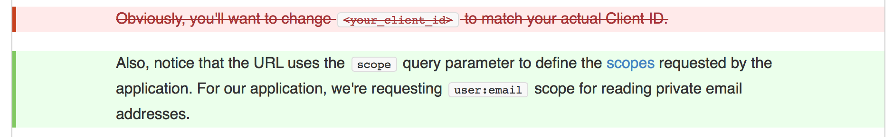
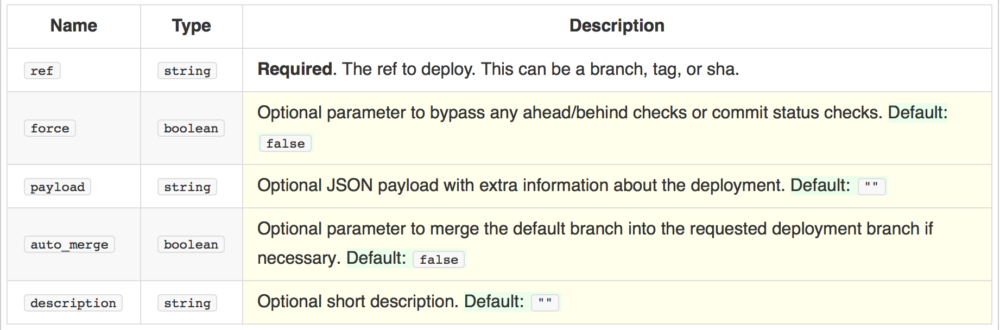
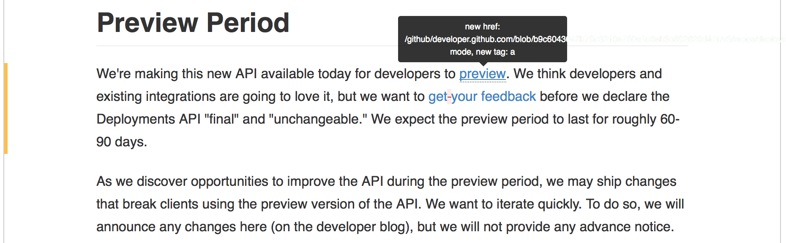

IBM 709 (1958-1959)

Anfang der 1960er gab es
Mr. Asimov, soon we’ll be reading and writing on computer screens. — Ted Nelson, 19611
1960/19061 nimmt Ted Nelson (23) in Harvard an einem Computerkurs teil. Ihm wird klar, dass mit Computern Dokumente verwaltet werden könnten.
Er nennt das von ihm erdachte System “Xanadu”.
Außer Douglas Engelbart versteht niemand was er meint.
I mistook a clear view for a short distance
— Ted Nelson
Speichert ältere Dateiversionen der letzten ≥ 30 Tage
Siehe “Versionsgeschichte” oder
https://de.wikipedia.org/wiki/Spezial:Letzte_Änderungen
Mediendateien, andere Seiteninhalte & Inhalte aus Wikidata
Rendered Prose Diffs für GitHub Markdown (seit Feb. 2014)


Rendered Prose Diffs für GitHub Markdown (seit Feb. 2014)


Diffable, more customizable maps für geojson (seit Feb. 2014)

Diffable, more customizable maps für geojson (seit Feb. 2014)
3D File Diffs für stl Dateien (seit Sept. 2013)

3D File Diffs für stl Dateien (seit Sept. 2013)

IBM 704 21 March 1957 by NASA (public domain)
“zippered lists” aus Nelson (1965a)
MediaWiki-Transclusion CC-BY-SA https://en.wikipedia.org/wiki/User:Xiong
Daley, R. C., and P. G. Neumann. 1965. “A General-Purpose File System For Secondary Storage.” In Proceedings of the Fall Joint Computer Conference, 213–230. http://www.multicians.org/fjcc4.html.
Nelson, Ted. 1965a. “Complex Information Processing: a File Structure for the Complex, the Changing and the Indeterminate.” In Proceedings of the 20th ACM National Conference, 84–100. Cleveland: ACM.
———. 1965b. “The Hypertext.” In Proceedings of the International Federation of Documentation (FID) Congress. 31. Washington, DC.
———. 2010. Possiplex: Movies, Intellect, and Creative Control. My Computer Life and the Fight for Civilization. Mindful Press.
{kind=link}
{kind=link}